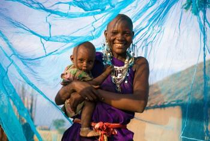
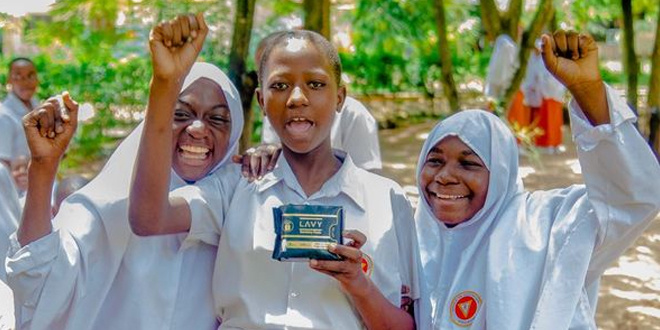

.jpg)
SANITARY PADS
" The OSIM Foundation is actively involved in supporting the well-being and dignity of local communities, particularly in schools, by addressing the essential need for sanitary pads. Recognizing the challenges faced by students, especially girls, in accessing menstrual hygiene products, our organization is committed to providing sanitary pads to ensure a healthy and supportive learning environment. Our initiative focuses on promoting menstrual hygiene and breaking down barriers that hinder educational access for young girls. By supplying sanitary pads to schools within local communities, we aim to empower female students to manage their menstrual health with confidence and without interruption to their education. The OSIM Foundation collaborates with schools, educators, and community leaders to implement sustainable and culturally sensitive menstrual hygiene programs. We prioritize education on menstrual health, hygiene practices, and the importance of breaking the stigma surrounding menstruation. Our goal is not only to provide sanitary pads but also to foster a supportive atmosphere that encourages open dialogue and understanding "

MATERNAL AND INFANT CARE
"OSIM Foundation places a strong emphasis on maternal and infant care as integral components of our comprehensive approach to community well-being. Recognizing the critical importance of the early stages of life, we implement targeted initiatives to support mothers and infants in accessing essential healthcare and nutritional resources. Our maternal and infant care programs focus on providing expectant mothers with proper prenatal education, healthcare, and nutritional support to ensure healthy pregnancies. Additionally, we offer postnatal assistance to new mothers, emphasizing the importance of breastfeeding, proper nutrition, and infant hygiene practices. Through these efforts, we aim to enhance the overall health and development of both mothers and their infants, setting the foundation for a thriving future. Collaborating with local healthcare professionals, community leaders, and volunteers, OSIM Foundation strives to create a nurturing environment that promotes the well-being of mothers and infants. By addressing the unique needs of this vulnerable demographic, we contribute to breaking the cycle of malnutrition and fostering healthier, more resilient communities. The OSIM Foundation remains committed to the holistic approach of combining malnutrition alleviation with maternal and infant care, recognizing the interconnectedness of these vital aspects in ensuring the overall health and prosperity of communities we serve. ."

MALNUTRITION
"The OSIM Foundation is a dedicated organization committed to addressing malnutrition within local communities. Our mission is to alleviate the impact of malnutrition by providing essential food services to those in need. Through targeted initiatives, we aim to improve the nutritional well-being of individuals and families, ensuring they have access to nourishing meals that contribute to their overall health and development. OSIM Foundation collaborates with local communities to identify and address specific nutritional challenges. Our programs are designed to be sustainable and community-driven, fostering long-term positive impacts. By working closely with community members, we strive to create a supportive environment that empowers individuals to overcome malnutrition and lead healthier lives. Through the provision of food services, OSIM Foundation seeks to make a meaningful difference in the lives of those facing malnutrition, ultimately contributing to the overall well-being and resilience of the communities we serve. "